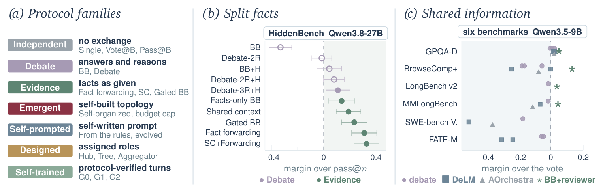
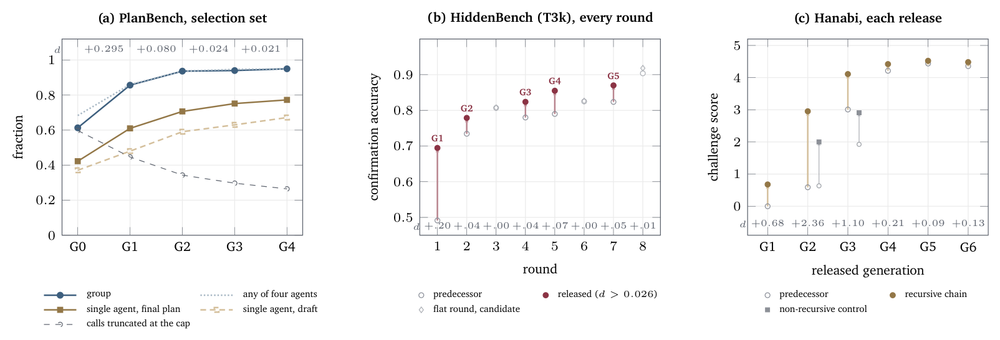

Recursive Collective Intelligence: Emergence on an Equal-Budget Ladder in Multi-Agent LLM Systems


Why equal cost matters
Large language models now often work as teams of agents. We expect such a team to solve problems beyond the reach of any single member, and most evaluations therefore credit a team when it beats one agent. We think this comparison overlooks cost. A team spends many more tokens than one agent, which could instead pay for more independent attempts. Voting over such attempts already explains most of the gains that papers report, so beating one agent leaves open whether the members actually helped each other.
We therefore compare a group with independent copies of the same model that spend the same tokens. Counting the group's completion tokens, we express its budget as nB, the number of independent agents those tokens would pay for. Using this budget, the group climbs an equal-budget ladder. It reaches level 1 by beating one agent and level 2 by beating the majority vote of nB independent agents. Level 3 requires beating their pass@nB, which is the chance that at least one of them is right.
We think the top level isolates interaction. Every selection rule, from a majority vote to a learned judge, picks one of the answers that independent agents already gave, so its accuracy stays at or below pass@n at equal cost. A group at level 3 has therefore produced correct answers through what its members exchanged.

When interaction makes a group smarter
We first give every agent the whole task. In this setting, a message mostly repeats what its reader already knows. Testing multi-agent debate, DeLM and AOrchestra with Qwen3.5-9B agents on six benchmarks, we find that all three stay at or below the majority vote at the same budget. A blackboard rises above the vote once a stronger 27B reviewer selects among the members' answers; with this reviewer, it beats the vote on all four benchmarks where we ran it.
Splitting the decisive facts across agents changes the outcome. On HiddenBench, each of four Qwen3.8-27B agents holds only part of the evidence, so an agent working alone mostly follows a decoy. Agents that exchange answers and reasons in a debate reach level 2, since the group's 0.688 stays just below the 0.703 of pass@n. Agents that forward their facts verbatim reach 0.959 at a budget of 6.2 agents, which places them 31 points above pass@n and above one agent given every fact at the same budget. We think moving information is what lifts the group to level 3.

How identical agents organize themselves
Next we let the group decide its own structure. Each agent may read only one message and may give this reading budget to another agent. Starting from identical copies, 27B agents organize themselves quickly. In about a third of the records, one agent collects enough budget to read every fact and becomes a hub. Answering like one agent given every fact, the hub raises the group's accuracy by 18 points over a group without transfers.
This organization costs tokens. Negotiating transfers and waiting for the hub, a self-organizing group spends about two thirds of its tokens on coordination, which keeps it at level 2. When the model writes a prompt for its own group from the rules, the prompt describes the same hub. Following this prompt, the group reaches level 3 at less than half the budget in a descriptive comparison.

How a group trains its next generation
Finally, we ask whether a group can make its next generation smarter from its own work. We call a group recursively collectively intelligent when its next generation, trained only on the group's own output, becomes smarter on the same ladder at equal cost. Training each generation on the turns that its own protocol verifies, groups on SplitBench climb the ladder at 4B, 9B and 27B. At 9B, for example, the margin over pass@n rises from −0.253 to +0.159 in two generations, and the second generation beats a control trained on base-model turns by 0.192.
To keep the gains reliable over many generations, we release each generation through a gate. The current group plays fresh tasks while an automatic check accepts its outputs without answer labels. Candidates then train from the current weights, and a candidate replaces the current generation once it beats it on tasks that earlier rounds have never used.
Because the group learns from its own interaction, it can learn what its agents cannot learn alone. To test this on HiddenBench, we train one run on the group's outputs and a matched run on each agent's solo outputs under the same caps. Over three generations, the collectively trained group stays far above four self-trained agents and ends at 0.836 against 0.658.
Recursion on PlanBench, HiddenBench and Hanabi
Applying this gated recursion to four Qwen3.5-9B agents, we see steady improvement on three benchmarks that test different abilities. On PlanBench, all four rounds release a generation, raising the group's accuracy on Blocksworld from 0.613 to 0.950. On HiddenBench, the group rises from 0.509 to 0.886 over five generations and climbs from level 2 to level 3 of the equal-budget ladder. On Hanabi, the base agents score zero, and six generations raise the challenge score to 4.5 out of 25, while a control run that trains on games of a fixed generation levels off near 2.9. In every case, each released generation beats its predecessor on unseen tasks.

Explore the results
Taken together, we think these results point to a simple rule. A group outperforms its members when it moves useful information more efficiently than it spends tokens on coordination, and the group can learn to do so from its own work. To see how each design choice moves a group on the ladder, open the playground and build a group from measured components.
Interactive playground
Every option is a configuration that we measured, and the page shows how each choice changes the group's budget, accuracy and ladder level.
Read the abstract
Large language models increasingly work as teams of agents, and a team is expected to solve problems beyond the reach of any single member. Most evaluations credit a team for outperforming a single agent, without accounting for the additional computation: a team may consume many times the tokens of one agent, and a plain vote over independent answers already explains most of the reported gain. Two questions therefore remain open: When does interaction itself make a group smarter, and can a group improve its next generation by learning from its own work? We answer both with the equal-budget ladder, which grades a group against independent agents at three levels: outperforming a single agent, a compute-matched majority vote, and compute-matched pass@n. On this ladder we define Recursive Collective Intelligence (RCI) as a group whose own output, without a teacher or external labels, makes its next generation smarter at equal cost. Three findings follow. First, interaction improves collective intelligence when it moves information across agents: forwarding split facts lifts groups above pass@n by up to 31 percentage points across three model scales. Second, organization emerges spontaneously: identical 27B agents form hubs and improve accuracy by 18 percentage points; encoding their organization in a prompt enables them to reach level 3 at less than half the token budget in a descriptive comparison. Third, groups recursively improve themselves: Two label-free generations progressively climb the ladder, the second 9B generation surpassing both pass@n and a control trained on base-model turns; on PlanBench, HiddenBench and Hanabi, each generation outperforms its predecessor on unseen problems for four to six generations. A group therefore outperforms its members when it forwards useful information more efficiently than it spends tokens on coordination, and learns to do so from its own work.
Citation
@article{he2026rci,
title = {Recursive Collective Intelligence: Emergence on an
Equal-Budget Ladder in Multi-Agent LLM Systems},
author = {He, Lixuan and Cai, Shengqu and Wu, Fang and Zheng, Shikang and
Jiang, Liwei and Li, Manling and Ma, Yi and Fei-Fei, Li and
Guibas, Leonidas and Wetzstein, Gordon and Choi, Yejin and
Hong, Yining},
year = {2026}
}